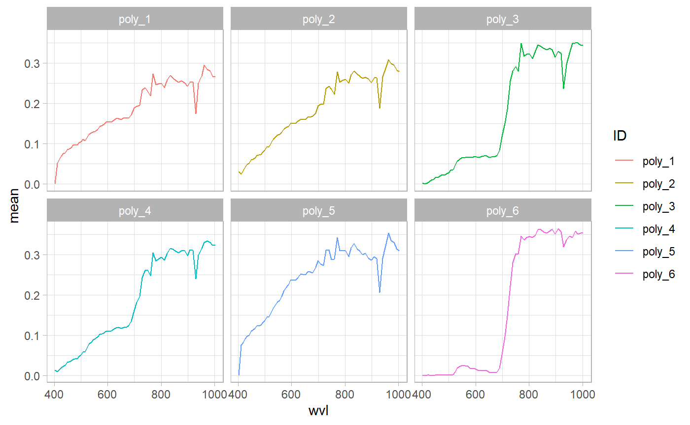
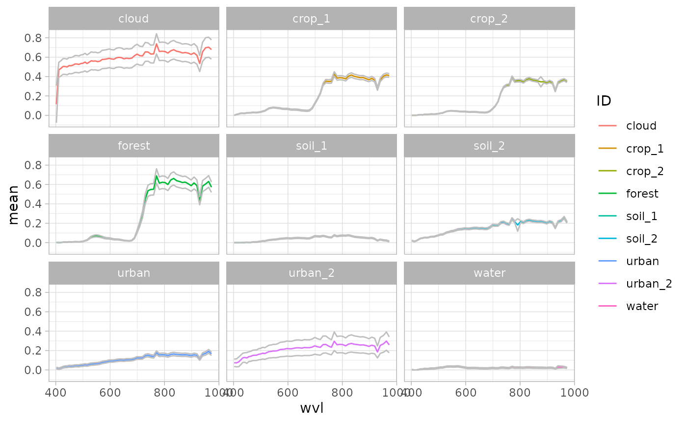
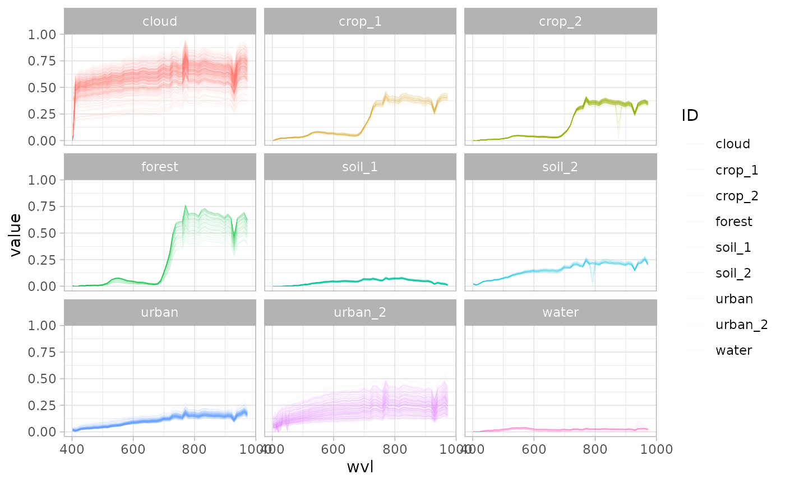

vignettes/Extracting-data-over-vector.Rmd
Extracting-data-over-vector.Rmdprismaread provides a very efficient function based on package exactextractr(https://github.com/isciences/exactextractr) for extracting and summarising data from the converted hyperspectral cubes over features of vector spatial files. The function allows computing several statistics, as well as extracting all pixel values, and saving them to RData, CSV or EXCEL files (see prisma_extract_spectra() documentation for info on available arguments).
For example, starting from a VNIR Cube obtained with pr_convert() and a vector polygon file:
library(prismaread)
library(ggplot2)
library(tmap)
in_full_path <- file.path(
system.file("testdata", package = "prismaread"),
"prismaread_test_HCO_FULL.tif"
)
in_poly_path <- system.file(
"extdata/testdata/polys_prisma.gpkg",
package = "prismaread"
)
# Download and unzip using piggyback if necessary
if (!file.exists(in_full_path)) {
message("Downloading test data - this may need a long time...")
if (!requireNamespace("piggyback", quietly = TRUE)) {
install.packages("piggyback")
}
in_full_zip_path <- gsub("tif$", "zip", in_full_path)
piggyback::pb_download(
basename(in_full_zip_path),
repo = "lbusett/prismaread",
dest = dirname(in_full_zip_path)
)
piggyback::pb_track(glob = "inst/testdata/*.tif")
unzip(in_full_zip_path, exdir = dirname(in_full_path))
unlink(in_full_zip_path)
}
# extract base statistics, in "long" format
extr1 <- pr_extract_spectra(in_full_path, in_poly_path, id_field = "field_id")
extr1
#> # A tibble: 2,079 x 4
#> wvl ID mean stdev
#> <dbl> <chr> <dbl> <dbl>
#> 1 402. cloud 0.114 0.191
#> 2 411. cloud 0.469 0.0768
#> 3 419. cloud 0.485 0.0788
#> 4 427. cloud 0.504 0.0811
#> 5 434. cloud 0.504 0.0813
#> 6 442. cloud 0.499 0.0811
#> 7 449. cloud 0.513 0.0833
#> 8 456. cloud 0.512 0.0838
#> 9 464. cloud 0.518 0.0851
#> 10 471. cloud 0.530 0.0871
#> # … with 2,069 more rows
# plot results using ggplot
library(ggplot2)
ggplot(extr1, aes(x = wvl, y = mean)) +
geom_line(aes(color = ID, group = ID)) +
facet_wrap(~ID) +
theme_light()
Argument stats_format defines the format used for statistics’ output. If “long” (default, as above), the output has one column for the ID of the feature, and one column for each statistic. If “wide”, the output has one column for each ID/statistic couple (e.g., mean_id_1, stdev_id_1, mean_id_2, etcetera).
in_vnir_path <- file.path(
system.file("testdata", package = "prismaread"),
"prisma_test_HCO_VNIR.tif"
)
# Download and unzip using piggyback if necessary
if (!file.exists(in_full_path)) {
message("Downloading test data - this may need a long time...")
in_vnir_zip_path <- gsub("tif$", "zip", in_vnir_path)
piggyback::pb_download(
basename(in_vnir_zip_path),
repo = "lbusett/prismaread",
dest = dirname(in_vnir_zip_path)
)
piggyback::pb_track(glob = "inst/testdata/*.tif")
unzip(in_vnir_zip_path, exdir = dirname(in_vnir_path))
unlink(in_vnir_zip_path)
}
# Extract base statistics for VNIR and save results as excel file, in "wide" format
extr2 <- pr_extract_spectra(
in_vnir_path, in_poly_path,
out_file = tempfile(fileext = ".xlsx"),
stats_format = "wide", id_field = "field_id"
)
extr2
#> # A tibble: 63 x 19
#> wvl mean_cloud stdev_cloud mean_crop_1 stdev_crop_1 mean_crop_2
#> <dbl> <dbl> <dbl> <dbl> <dbl> <dbl>
#> 1 402. 0.114 0.191 0 0 0.000499
#> 2 411. 0.469 0.0768 0.00860 0.00255 0.00000475
#> 3 419. 0.485 0.0788 0.0144 0.00229 0.000777
#> 4 427. 0.504 0.0811 0.0215 0.00261 0.00540
#> 5 434. 0.504 0.0813 0.0215 0.00245 0.00665
#> 6 442. 0.499 0.0811 0.0206 0.00250 0.00527
#> 7 449. 0.513 0.0833 0.0254 0.00258 0.00978
#> 8 456. 0.512 0.0838 0.0256 0.00250 0.00928
#> 9 464. 0.518 0.0851 0.0268 0.00282 0.0104
#> 10 471. 0.530 0.0871 0.0301 0.00300 0.0130
#> # … with 53 more rows, and 13 more variables: stdev_crop_2 <dbl>,
#> # mean_forest <dbl>, stdev_forest <dbl>, mean_soil_1 <dbl>,
#> # stdev_soil_1 <dbl>, mean_soil_2 <dbl>, stdev_soil_2 <dbl>,
#> # mean_urban <dbl>, stdev_urban <dbl>, mean_urban_2 <dbl>,
#> # stdev_urban_2 <dbl>, mean_water <dbl>, stdev_water <dbl>Additional arguments allow specifying which statistics are needed, as well as selecting if info regarding single pixels contained in each polygon need to be returned:
# extract custom statistics
extr3 <- pr_extract_spectra(
in_vnir_path, in_poly_path,
selstats = c("mean", "coeffvar", "stdev", "min", "max"),
id_field = "field_id"
)
extr3
#> # A tibble: 567 x 7
#> wvl ID mean coeffvar stdev min max
#> <dbl> <chr> <dbl> <dbl> <dbl> <dbl> <dbl>
#> 1 402. cloud 0.114 1.68 0.191 0 0.564
#> 2 411. cloud 0.469 0.164 0.0768 0.176 0.617
#> 3 419. cloud 0.485 0.163 0.0788 0.188 0.638
#> 4 427. cloud 0.504 0.161 0.0811 0.197 0.662
#> 5 434. cloud 0.504 0.161 0.0813 0.199 0.662
#> 6 442. cloud 0.499 0.163 0.0811 0.194 0.657
#> 7 449. cloud 0.513 0.162 0.0833 0.202 0.677
#> 8 456. cloud 0.512 0.164 0.0838 0.202 0.677
#> 9 464. cloud 0.518 0.164 0.0851 0.200 0.685
#> 10 471. cloud 0.530 0.164 0.0871 0.207 0.703
#> # … with 557 more rows
# plot results using ggplot
ggplot(extr3, aes(x = wvl)) +
geom_ribbon(aes(ymin = mean - stdev, ymax = mean + stdev, fill = ID), alpha = 0.2) +
geom_line(aes(y = mean, color = ID, colour = ID)) +
facet_wrap(~ID) +
theme_light()
# extract custom statistics and quantiles
extr4 <- pr_extract_spectra(
in_vnir_path, in_poly_path,
quantiles = TRUE,
selstats = c("mean", "stdev"),
id_field = "field_id"
)
extr4
#> # A tibble: 567 x 9
#> wvl ID mean stdev quant_5 quant_25 quant_50 quant_75 quant_95
#> <dbl> <chr> <dbl> <dbl> <dbl> <dbl> <dbl> <dbl> <dbl>
#> 1 402. cloud 0.114 0.191 0 0 0 0.301 0.491
#> 2 411. cloud 0.469 0.0768 0.313 0.427 0.476 0.512 0.566
#> 3 419. cloud 0.485 0.0788 0.324 0.443 0.490 0.529 0.587
#> 4 427. cloud 0.504 0.0811 0.339 0.461 0.511 0.550 0.611
#> 5 434. cloud 0.504 0.0813 0.337 0.460 0.510 0.549 0.611
#> 6 442. cloud 0.499 0.0811 0.335 0.454 0.505 0.544 0.605
#> 7 449. cloud 0.513 0.0833 0.343 0.467 0.519 0.561 0.625
#> 8 456. cloud 0.512 0.0838 0.340 0.465 0.518 0.560 0.623
#> 9 464. cloud 0.518 0.0851 0.344 0.470 0.525 0.566 0.631
#> 10 471. cloud 0.530 0.0871 0.352 0.480 0.537 0.578 0.647
#> # … with 557 more rows
# extract also all pixels
extr5 <- pr_extract_spectra(
in_vnir_path, in_poly_path,
allpix = TRUE,
selstats = c("mean", "stdev"),
id_field = "field_id"
)
# stats are saved in the "stats" slot of the output
extr5$stats
#> # A tibble: 567 x 4
#> wvl ID mean stdev
#> <dbl> <chr> <dbl> <dbl>
#> 1 402. cloud 0.114 0.191
#> 2 411. cloud 0.469 0.0768
#> 3 419. cloud 0.485 0.0788
#> 4 427. cloud 0.504 0.0811
#> 5 434. cloud 0.504 0.0813
#> 6 442. cloud 0.499 0.0811
#> 7 449. cloud 0.513 0.0833
#> 8 456. cloud 0.512 0.0838
#> 9 464. cloud 0.518 0.0851
#> 10 471. cloud 0.530 0.0871
#> # … with 557 more rows
# pixel values are saved in the "allpix" slot of the output
extr5$allpix
#> # A tibble: 295,974 x 4
#> ID wvl pixel value
#> <chr> <dbl> <chr> <dbl>
#> 1 cloud 402. pix_001 0.377
#> 2 cloud 411. pix_001 0.368
#> 3 cloud 419. pix_001 0.378
#> 4 cloud 427. pix_001 0.397
#> 5 cloud 434. pix_001 0.396
#> 6 cloud 442. pix_001 0.387
#> 7 cloud 449. pix_001 0.399
#> 8 cloud 456. pix_001 0.395
#> 9 cloud 464. pix_001 0.401
#> 10 cloud 471. pix_001 0.409
#> # … with 295,964 more rows
ggplot(extr5$allpix, aes(x = wvl)) +
geom_line(aes(y = value, group = pixel, color = ID), lwd = 0.02) +
facet_wrap(~ID) +
theme_light()